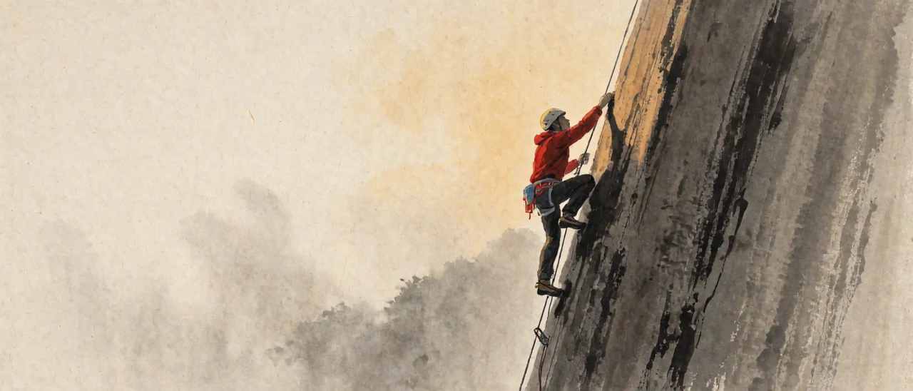
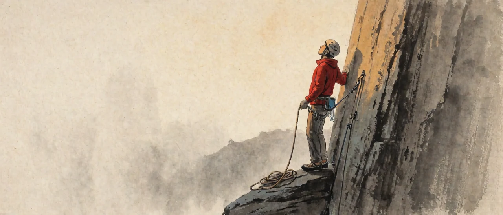
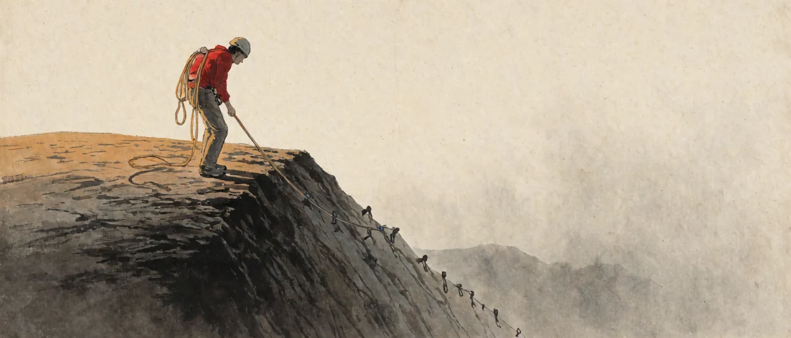
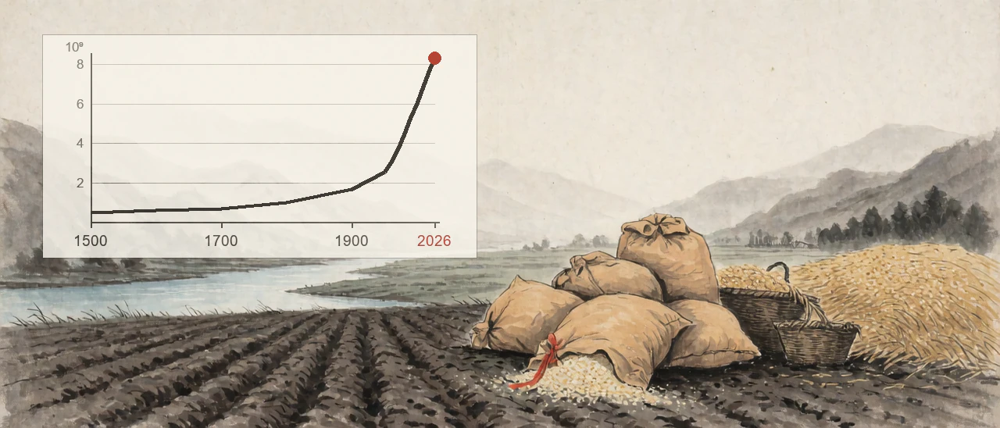

1. 이것은 절차에 대한 이야기이다
위 글이 만들어진 것은 2009년이다. 즉흥적으로 생각난 것을 죽 적어 본 것이고 다시 읽어보면 작업을 어떤 단위로 끊어 쌓아 갈 것인가에 대한 절차를 보여주고 있다.
확보된 거점은 등반자가 가파른 절벽을 타고 올라가는 과정에서 임시로 박아두는 고정점으로.. 그 지점을 지나는 진행 시도가 문제가 생겨 어긋나는 경우 출발점 최초의 바닥까지가 아니라 확보된 임시 고정점 아래로는 떨어지지 않도록 막아주는 역할을 하게 된다.
인간이 수행하는.. 한 호흡으로 끝나지 않고 지속적이고 누적적인 진행을 요하는 모든 종류의 작업에서 동일한 원리가 그대로 적용되는데 어디까지가 확정인지를 중간중간 임시 거점으로 갈무리하지 않는 경우 진행이 어긋나면 완전히 처음부터 시작하거나 어중간한 지점까지 후퇴하지 않으면 계속 동일한 실패를 반복하게 된다.
어중간한 지점 역시 명시적으로 확보해 두지는 않았으나 어쨌든 기억을 더듬어 찾아가는 묵시적 확보거점이긴 하나 중간중간 명시적으로 확보거점을 두는 경우보다는 여러 측면에서 비효율적이거나 불리한 성격을 가진다. 즉 메모리를 비우고 온전히 진행에 집중하는 것은 명시적 확보거점 쪽일 때와 비교하기 어렵다.

2. Bs2Fob에서 Bs와 Fob
이 사이트의 저작자는 필명을 Bs2Fob 로 쓰고 있는데 Bs 는
Base 이면서 Basic 을 축약한 표현이다. 타불라 라사.. 즉 로크가 빈 서판으로 비유한 모든
인식과 인지를 비워 낸 출발점이 최초의 Bs 이다. 이미 알고 있는 무언가를
전제하지 않고 오직 관측과 그 관측들에 기반한 가추와 그 가추에 대한 검증과 확인을
통해 모든 검토를 쌓아나가는 시작점이 여기이다.
Fob 는 forward operating base.. 전진거점으로 번역되는 군사용어
약어이다. 게임 등에서도 그냥 Fob 로 약어로 지칭되는 알려진 표현을 그대로
가져온 것이다. 그리고 이것이 위의 비유에서 도출한 확보된 거점에 일차적으로
대응하는 표현이 된다.
둘을 가르는 것은 확정된 것이 있느냐 없느냐이고.. BS 에는 아무것도
놓여 있지 않고 FoB 에는 검증을 통과한 결과가 놓여 있다. 작업 Task 는
BS 에서 출발해 FoB 를 세우는 일이 본체를 이루게 된다.
3. FoB 는 다음 사이클의 BS 가 된다
그리고 위의 진행 구조는 매 턴을 거치면서 나선형으로 순환하게 된다. 안정화된
FoB 는 다음 사이클의 BS 가 되고.. 이 Bs 에서
다음 Fob 가 연결되어 구축된다. 한 번 세운 거점은 확정된 도착점이 아니나
그 지점 이후에 대하여 다시 인식을 비우고 작업을 이어나가는 새로운 출발점이다.
이번에 확보한 거점이 다음 검토가 딛는 바닥이 되고.. 성과는 다음의 시행착오를
줄여주는 재료로 넘어가면서 무한히 재활용되고 상향되는 구조이다.
이것이 Bs2FoB 의 2 가 하는 일이다. 2 는
영어의 to 의 소리를 흉내 낸 약어 표기 연결어이다. Bs2FoB 는 전체적으로
두 지점을 이야기하는 것이 아니고 한 지점이 다른 지점으로 넘어가는 운동을 묘사하고
있는 필명이다.

4. 완결과 완벽에 대한 이야기
위의 글은 흔한 표현과 용례인 "완벽"과 구분되는 "완결"이라는 표현과 용례를 새롭게 정의하여 글에서 마무리 부분에 사용하고 있다. 완벽은 더 고칠 것이 없는 상태를 가리키는 표현이다. 완결은 완벽과 구분하여 지금 지점의 최선을 갈무리하고 손을 뗀다는 판정으로 정의되었다. 완벽을 겨누는 한 작업은 끝나지 않고 거점도 서지 않는다는 것이 이야기의 핵심이 된다.
그래서 완결은 완벽을 향한 강박을 절단하는 것에서 시작되는 구조를 갖게 된다. 잘라내는 일이 먼저이고 갈무리가 그다음이며.. 순서를 바꾸면 절단이 영원히 미뤄진다. 되는 데까지를 확정한 뒤 무엇을 확보했고 무엇이 남았는지 밝히고 넘어가는데.. 남은 것을 참조할 수 있는 형태로 기록해 두는 일까지가 갈무리의 작업이 된다.
5. 거점을 세우지 않고 있다는 신호
한 문제에 매달려 같은 자리를 여러 번 시도하고 있다면 거점을 세우지 않고 있는 것이다. 시도가 실패해서가 아니라 실패했을 때 돌아갈 지점을 만들어 두지 않아서 매번 같은 거리를 다시 오르게 되는 현상이다.
6. 남는 것
정상에 도달해 로프를 뽑아 올리면 올라온 길을 따라 확보점들이 박혀 있고.. 그 배열이 곧 기록이 된다는 이야기는 어디까지나 하나의 정해진 목표 달성 가능한 장기과제를 전제로 한 비유적인 이야기이긴 하다. 어쨌든 이 경우 도착점에서 확보거점들을 돌아보면 어디를 지나 여기까지 왔는지가 그 거점들을 통해 남아 있고 다시 점검하고 복기할 수 있다는 것도 틀린 표현은 아니다.
그러나 현실의 살아가는 자체는 도달점이 없는 제로에서 무한으로의 여정에 가깝고 대국적인 의미에서 도달이란 진행의 정지이며 죽음에 대한 다른 표현일 뿐이다. 이걸 구원이니 깨달음이니 하는 식으로 포장하여 장사판을 벌이는 밈플렉스 교단들이 많으나 이 글의 필자의 관점에서는 그냥 귀여운 유치원생들의 놀이 이상으로 관측되지 않는 헛지랄 망상놀음 유희역할극들일 뿐이다.
기본적으로 이 사이트는 <인지공리000>이라는 시리즈 연작 작문을 작성하고
누적하는 창구로 세팅된 것인데 이 사이트의 작업 역시 Bs2Fob 의 방식을
취하게 될 수밖에 없고 그래서 이 글이 연작의 첫 번째 글로 선정되고 게시된 것이다.

※ 비료 이야기
최근 200년~300년 구간을 인류사에서는 근현대 과학혁명의 시대라고 부르는데 이
기간이 이루어진 기술의 혁신과 지구 표면을 통째로 갈아엎다시피 한 인간 문명의 전개는
그 이전 5만년.. 또는 소위 문명이라고 부를 만한 것이 발견되는 최근 1만년 정도의 모든
성과들을 압도하고 있다. 이 현상의 근원에 바로 위에서 적은 Bs2Fob 의
접근이 집단사고로 체계화된 현상이 있다. 이후에 이 부분에 대해 다시 한번 제대로
검토를 하겠지만 인쇄출판 혁명과 맞물리는 대학이라는 교육 연구기관의 성립과
연구성과를 공유하고 피어리뷰하고 검증하는 저널시스템의 도입과 활용이 만들어낸
검토단계 심화가 폭발한 결과이다.
이 기간에 지구상에 출현한 현생인류의 개체수만 놓고 봐도 그 이전 5만년의 전체 개체수를 넘기는데 이것도 과학기술혁명의 성과 중 하나인 하버보슈법의 발견과 연결된다. 하버보슈법의 발견을 촉발한 직전 50년 정도는 구아노 혁명이라는 것이 있었고 구아노의 고갈이 대기 중의 질소를 화학적 공정으로 직접 고정해 토양에 투입함으로써 피할 수 없었던 경작지의 질소고갈과 이로 인한 대흉년의 도래와 기근과 그것이 초래하는 피할 수 없는 분쟁과 학살과 인구조절의 굴레를 끊어버리는 역할을 했다. 2026년 09월 현재 기준 전 세계 인구수는 약 83억 1,668만 명이다.

국제연합(UN)이 공식적인 체계적 세계 인구 통계 및 추계(World Population Prospects)를 시작한 해는 1950년이고.. 1950년을 기준으로 한 매 10년 단위의 세계 인구 집계(중기 추계 및 공식 추산 기준) 기록은 다음과 같다.
| 1950년 | 약 25억 5,600만 명 | 1960년 | 약 30억 3,900만 명 |
| 1970년 | 약 37억 66만 명 | 1980년 | 약 44억 5,300만 명 |
| 1990년 | 약 52억 7,800만 명 | 2000년 | 약 60억 8,200만 명 |
| 2010년 | 약 69억 5,600만 명 | 2020년 | 약 77억 9,400만 명 |
1500년 기준 세계인구 추정치는 5억 명 정도이고 흑사병 이후 꽤 회복된 수준의 값이다. 1600년 기준도 6억 명 이내로 추정되고 1700년 기준으로는 대략 7억 명 이하 수준이었다. 본격적으로 증가하는 것은 1800년 기점의 10억 명 이하 구간 그리고 1900년의 17억 명 이하 구간인데.. 1900년 기준치는 구아노 혁명으로 경작지 질소고갈이 나름 제한된 생물퇴적층 활용으로 방어되면서 달성된 결과이다. 그리고 1900년 이후는 이제 본격적인 하버보슈법의 시대로 접어들고 1960년 초반에 이미 1900년 기준값의 두 배를 넘어선다.